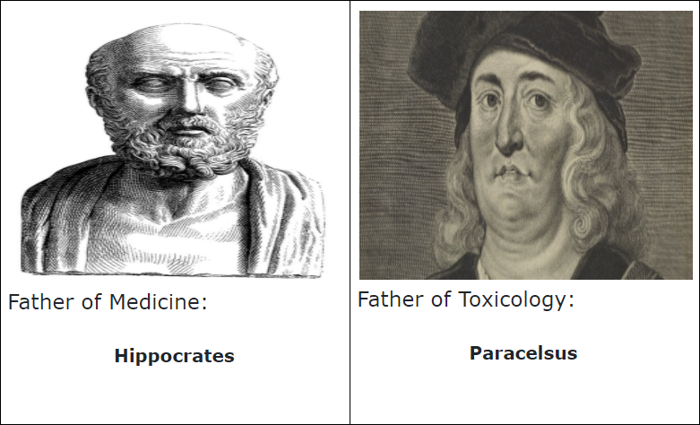
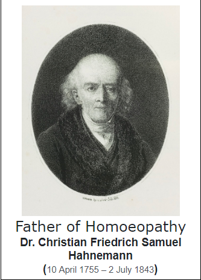

SAMCHIKITSA
About Homeopathy
“Like cures like”—the notion that a disease can be cured by a substance which produces similar symptoms in healthy people. This concept of ‘law of similars' was also stated by Hippocrates and Paracelsus.
But Dr. Hahnemann established it on a scientific blueprint despite the fact that he lived in the age when modern scientific methods were almost unknown.
-
“Law of minimum dose”—the notion that after some threshold dilution, the lower the dose of the medication, the more its effectiveness.
Homeopathic products come from plants (such as red onion, arnica, poison ivy, belladonna -deadly nightshade, minerals such as white arsenic,zinc, calcium etc., or animals. Homeopathic products are often made as sugar pellets to be to be consumed orally and also in other forms such as ointments, gels, drops, creams, and tablets by a standard method called dynamisation or potentisation, which comprises of successive dilutions and succussions to raise the inherent curative power of the drugs to maximum.
Treatments are based on “individualization” or —it’s common for different people with the same condition to receive different treatments.
What is homeopathy?
Homeopathy or homeopathic practice, is a medical system that was developed in Germany more than 200 years ago . It’s based on two theories:
- Homoeopathic medicines are very cost effective, palatable, have no adverse side effects on the body and can be administered simply.
- In some cases, the medicines can be prescribed on the basis of symptoms of the patients, without depending upon the cumbersome and costly diagnostic modalities.
- Homoeopathy has been useful in treatment of psychosomatic disorders, autoimmune diseases, geriatric and pediatric disorders, ailments during pregnancy, obstinate skin diseases, lifestyle disorders and allergies, etc.
- It also has a positive role in improving the quality of life in incurable chronic diseases like cancer, HIV/AIDS, terminally ill patients and incapacitating diseases like rheumatoid arthritis, etc. Its popularity is gaining momentum, all over the world.
Benefits of homeopathy:
- In India in 1839 when Dr. John Martin Honigberger successfully treated Maharaja Ranjit Singh for the paralysis of Vocal Cords. Dr. Honigberger settled in Kolkata and became popular as Cholera-doctor.
- Dr. Lahiri, Dr. B. K. Sarkar and many others made personal efforts in establishing Homoeopathy as a profession. They are well known for their contribution to the growth of Homoeopathy not only in West Bengal but also in the whole country.
- Homeopathy has now become a very commonly used mode of treatment that is used by the general public to the President of India.
Homeopathy in India:
Homeopathy around the globe:
Homoeopathy is currently used in over 80 countries. It has legal recognition as an individual system of medicine in 42 countries. It is recognized as a part of complementary and alternative medicine in 28 countries. WHO considers Homeopathy as the most commonly used forms of treatment method.
Every three out of four Europeans know about Homoeopathy and of these, 29 percent use it for their own health care. Studies have identified Homoeopathy to be the most frequently used children in European countries. The National Health Interview Survey 2007, estimated 3.9 million adults and 910,000 children used Homoeopathy in North America.
- * Homeopathic pharmacy
* Materia Medica
* Organon of medicine and Homeopathic philosophy and Psychology
* Repertory
There are also specializations i.e., MD (Hom) and PhD in Homoeopathy.
This is the knowledge every homeopath gains during their study.
Myths about homeopathy:
These are some common misconceptions and myths about homeopathy.
MYTH: “HOMEOPATHY IS UNSCIENTIFIC”
REALITY : There is a large body of evidence from scientific research data , control clinical studies and clinical outcome trials conducted by various molecular biologists, physicists and nanotechnologists all around the world who have proven that homeopathy is scientific.
MYTH: “HOMEOPATHY IS UNSCIENTIFIC”
REALITY : There is a large body of evidence from scientific research data , control clinical studies and clinical outcome trials conducted by various molecular biologists, physicists and nanotechnologists all around the world who have proven that homeopathy is scientific.
MYTH: “HOMOEOPATHIC MEDICINES ACT SLOWLY”
REALITY : It depends upon TIME duration and SEVERITY OF DISEASE (SOD) Homoeopathy acts in diarrhea, fevers, allergies, in acute attacks of asthma, disorders of menstruation, troubles of children and many more. Unfortunately, many times people go to a homeopath as a last hope and by then the disease would have progressed much. Severity of disease increases with time.For faster results please try to contact your homeopath in early stages of disease.
MYTH: “HOMOEOPATHY CANNOT TREAT SERIOUS MEDICAL CONDITIONS”
REALITY: Homoeopathy is just like any other medical system wherein various conditions from acute to chronic can be treated. You can avoid surgery by taking homeopathic medicines in cases such as Hernia, cyst, allergic sinusitis and many more. In short, you can approach a homeopath from ‘C’ to ‘C’ i.e., from Cold to Cancer.
Based on the severity of the disease, homoeopaths guide the patients whether to take medication or to go for surgery. Every homeopath is well aware of the scope and limitations of his system.
MYTH: “HOMOEOPATHIC DOCTORS ARE NOT QUALIFIED ENOUGH AND ARE UNPROFESSIONAL””
REALITY : In India, it takes 5 and half years to graduate as a homeopathic doctor. Homoeopathy is recognized by an Act of the Parliament.
The syllabus of this course(current course) is similar to conventional medicine:
1st year- Anatomy, Physiology, Homeopathic Pharmacy, Biochemistry
2nd year- Pathology, Microbiology, Parasitology, Forensic medicine and Toxicology, Org of medicine and Materia Medica
3rd year- Gynecology and Obstetrics, Surgery, ENT, Ophthalmology. Org of medicine and Materia medica
4th year- Practice of medicine, Community medicine, Org of medicine, Materia medica and Repertory
In fact, homeopathic doctors study additional subjects related to this system.